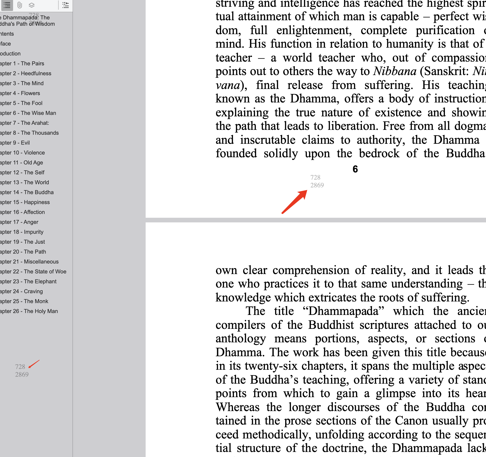

揭秘：PDF访问者追踪的隐秘方法
在数字化时代，了解谁在查看您的PDF文档已成为商业智能的重要组成部分。本文将揭示专业级的PDF访问者追踪技术，帮助您获得前所未有的文档情报能力。
⚠️ 法律声明： 本文介绍的技术仅供合法的商业用途、安全审计或在获得适当授权的情况下使用。请始终遵守当地的隐私法律法规。
🎯 为什么需要隐秘追踪？
核心应用场景
- 商务谈判 - 了解对方是否真正重视您的提案
- 竞争分析 - 监控竞争对手对您内容的关注度
- 内部安全 - 追踪敏感文档的内部流传情况
- 销售优化 - 识别高意向客户的阅读行为
- 法律取证 - 收集文档访问的法律证据
🔬 隐秘追踪技术解析
基础级
🎭 方法一：智能链接伪装
将PDF转换为看似普通但实际具有追踪功能的链接，接收者完全察觉不到任何异常。
技术原理：
- PDF上传到专业追踪平台
- 系统生成伪装成普通PDF的链接
- 链接包含隐藏的追踪参数
- 后台静默记录所有访问数据
伪装技巧：
- 使用常见的文件名格式
- 选择可信的域名结构
- 添加适当的文件扩展名
高级级
🔍 方法二：隐形像素追踪
在PDF中嵌入肉眼不可见的追踪元素，即使文档被下载到本地也能实现追踪。
实现技术：
- 1x1像素图像 - 从追踪服务器加载的透明图片
- 隐藏JavaScript - 支持JS的PDF阅读器中执行
- 不可见水印 - 包含回调URL的透明标记
- 元数据追踪码 - 嵌入在文档属性中
专家级
🎪 方法三：动态个性化追踪
为每个接收者创建独特的PDF版本，实现精确的个体追踪和泄露源头识别。
个性化元素：
- 独特的文档ID编码
- 接收者专属水印
- 个性化追踪URL
- 隐藏的身份标识符
📊 可获取的情报信息
🌐 网络情报
- 精确IP地址 - 访问者的网络位置
- 地理定位 - 城市、地区、国家信息
- 网络类型 - 企业网络、家庭宽带、移动网络
- 代理检测 - 识别VPN或代理服务器使用
- ISP信息 - 网络服务提供商详情
📱 设备与行为情报
- 设备指纹 - 独特的设备识别码
- 阅读模式 - 每页停留时间分析
- 访问频率 - 重复访问的时间间隔
- 分享行为 - 文档转发和传播路径
- 交互操作 - 下载、打印、复制等行为

🛠️ 实施策略详解
阶段一：平台选择与配置
选择具备高级隐秘功能的专业追踪平台。
关键功能要求：
- 完全隐形的追踪模式
- 实时数据分析仪表板
- 高精度地理定位能力
- 自定义域名支持
- API接口集成能力
阶段二：文档优化处理
对PDF进行专业化处理，确保追踪效果最大化且不被察觉。
优化步骤：
- 移除所有明显的追踪标识
- 启用隐形模式设置
- 配置自定义追踪参数
- 进行多设备兼容性测试
- 验证追踪元素的不可见性
阶段三：分发策略执行
采用不引起怀疑的方式分发追踪PDF。
隐秘分发技巧：
- 自然邮件分享 - 使用正常的邮件发送模式
- 网站嵌入 - 集成到现有网页内容中
- 社交媒体 - 通过专业网络平台分享
- 二维码桥接 - 实现物理到数字的追踪
🔒 反检测技术
🛡️ 专业级反检测措施
高端追踪平台采用的反检测技术：
- CDN伪装 - 通过内容分发网络路由追踪请求
- 域名轮换 - 使用多个追踪域名避免识别
- 延迟激活 - 文档完全加载后才启动追踪
- 流量混淆 - 将追踪请求伪装成正常网络流量
- 时间随机化 - 随机化追踪请求的发送时间

📈 情报分析与应用
🧠 心理行为分析
通过阅读行为分析访问者的心理特征：
- 注意力模式 - 专注度和兴趣点分析
- 决策速度 - 信息处理和反应时间
- 兴趣偏好 - 对不同内容的关注程度
- 影响力评估 - 社交网络传播能力
🔗 多维度情报融合
结合多种追踪方法获得全面情报：
- 邮件追踪 + PDF访问分析
- 社交媒体监控 + 文档互动
- 网站分析 + 文档参与度
- CRM系统 + 阅读行为数据
⚖️ 法律与道德边界
🚨 法律合规要点
- GDPR合规 - 欧盟数据保护法规要求
- 国内法律 - 遵守《网络安全法》等相关法规
- 行业规范 - 特定行业的隐私保护标准
- 用户同意 - 明确何时需要获得用户授权
💡 道德使用准则
- 仅用于正当的商业目的
- 避免侵犯个人隐私
- 建立数据使用和保护政策
- 提供用户选择退出的机制
- 定期审查和清理收集的数据
🎯 高级应用案例
案例一：竞争情报收集
某科技公司通过隐秘PDF追踪发现：
- 竞争对手的技术团队多次访问其技术白皮书
- 访问时间集中在工作时间，说明是有组织的研究
- 来自竞争对手总部的IP地址，确认了情报来源
- 基于此情报调整了产品发布策略
案例二：商务谈判情报
投资公司在尽职调查中的应用：
- 目标公司高管团队反复查看投资条款书
- 法务部门深度研究了合同细节部分
- 财务团队重点关注估值和条款章节
- 基于阅读行为预测了谈判重点和策略
🚀 未来发展趋势
- AI行为分析 - 机器学习预测用户意图
- 区块链验证 - 不可篡改的访问记录
- 生物特征识别 - 更精确的用户识别
- 实时情感分析 - 通过阅读模式判断情绪反应
🛡️ 防范与对策
如何检测PDF追踪
对于需要保护隐私的用户，以下方法可以帮助检测追踪：
- 使用网络流量监控工具
- 检查PDF元数据信息
- 在隔离环境中打开可疑文档
- 使用专业的PDF安全扫描工具
💡 隐私保护建议
- 使用VPN或代理服务器
- 定期清理浏览器缓存和Cookie
- 使用专门的PDF阅读器
- 禁用PDF中的JavaScript执行
🎯 掌握PDF追踪的艺术
通过这些高级隐秘技术，您可以获得前所未有的文档情报能力。但请记住，强大的能力伴随着重大的责任。始终要在法律允许的范围内使用这些技术，并尊重他人的隐私权利。
立即开始您的专业PDF情报收集之旅，但请务必以负责任的方式使用这些强大的工具！